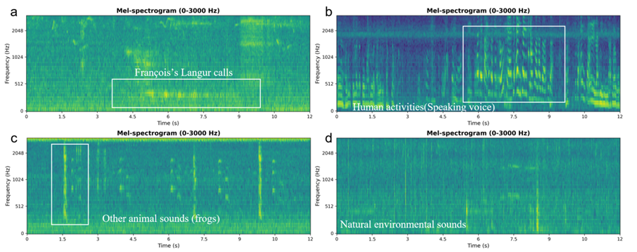
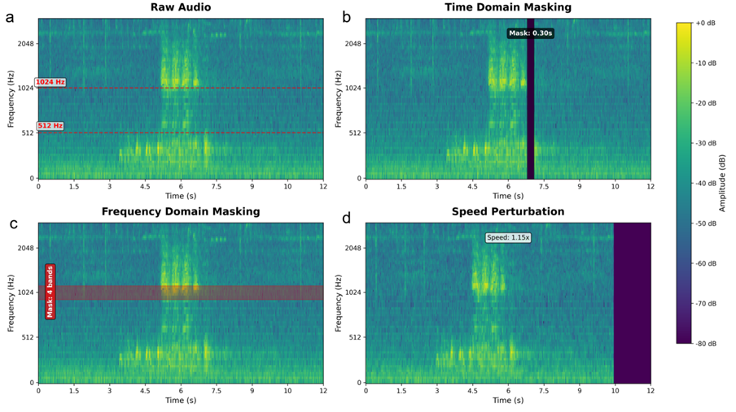
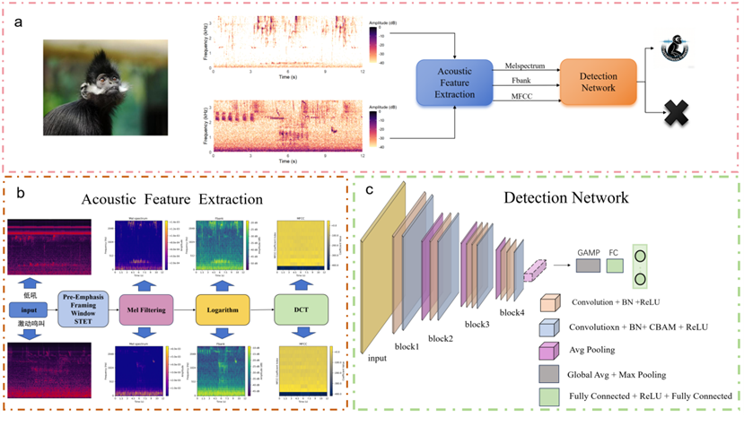

音频数据处理
使用Adobe Audition CC 2018对人工录制音频进行整理，提取成年雄性黑叶猴长距离鸣叫序列，构建训练数据集。通过Sinc算法将44.1kHz人工数据重采样至48kHz，匹配被动声学设备格式。针对野外正样本稀缺问题，通过人工筛选PAM录音、模型迭代筛选扩充数据集，将黑叶猴鸣叫标注为正类，同时标注人类活动声、其他生物声、自然环境声三类负类，完成数据集构建。
图4 人工标注音频分类示例图
Figure 4 Example of manually annotating audio categories

音频数据增强与输入模型方法
针对正样本有限问题，引入时域掩蔽、频域掩蔽、音频加速、背景加噪四类数据增强策略，在保留原始声学结构的前提下扩充样本多样性。采用梅尔频谱图作为模型输入，统一音频时长为12s单声道格式，不足部分通过静音填充，保留原始声景信息以提升模型鲁棒性。
图5 数据增强方法
Figure 5 Data augmentation method

模型评价指标与性能评估方法
针对黑叶猴鸣叫数据不平衡问题，核心采用精确率（Precision）、召回率（Recall）作为评估指标，同时引入F1-score作为综合评价标准，平衡精确率与召回率，全面衡量模型在少样本场景下的识别性能。
Recall = TP/(TP+FN) ——（1）
Precision = TP/(TP+FP) ——（2）
F1 = 2×(Precision×Recall)/(Precision+Recall) ——（3）
注：TP=真阳性，FN=假阴性（漏检），FP=假阳性（误报）
模型结构与训练方法
采用课题自研DeepADN深度学习模型，核心由声学特征提取层和音频检测网络组成，提取梅尔频谱、Fbank、MFCC三类声学特征。基于预训练PANNS_CNN10模型，通过卷积神经网络提取时频特征，引入注意力池化层聚焦关键信息，针对黑叶猴0-3kHz鸣叫频段添加CBAM自注意力模块，强化目标频段学习，提升模型识别性能。
图6 应用DeepADN模型步骤说明
Figure 6 Instructions for steps applying the DeepADN model
